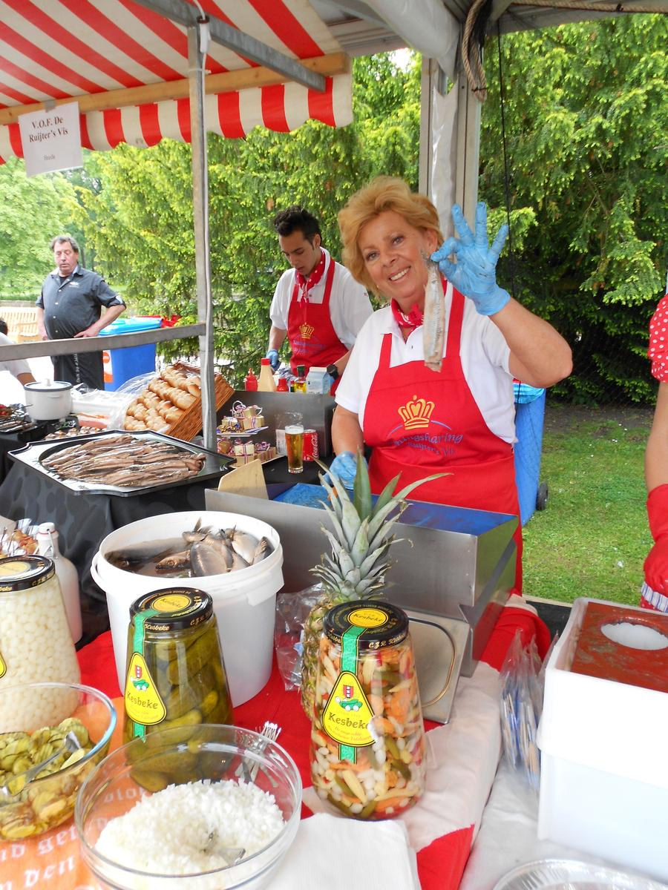

Ons assortiment
We kopen alles zelf in, dus we weten precies wat we in huis hebben. De verse vis fileren we dezelfde dag nog.
Verse vis
Verse vis speelt de grootste rol in ons assortiment. Alles wordt dezelfde dag nog door ons gefileerd.
- Zalm (filet)
- Kabeljauwfilet of -haasjes
- Forel (filet)
- Zalmforel (filet)
- Dorade (filet)
- Zeebaars (filet)
- Zeeduivel (filet)
- Grote tongen (filet)
- Tongschar
- Tarbot (filet)
- Griet (filet)
- Schol (filet)
- Schelvis (filet)
- Wijting (filet)
- Heilbot (filet)
- Tonijn (filet)
- Zwaardvis
- Rogvleugels
- Rode mul (filet)
- Snapper (filet)
- Victoriabaars (filet)
- Makreel
- Bakharing
- Stoof- of bakpaling (op bestelling)
Gebakken vis
Wat is er nu lekkerder dan een goed gebakken vis? Je kunt de hele dag bij ons terecht.
- Kibbeling
- Lekkerbek (van kabeljauw)
- Visfriet
- Scholfilet
- Schol
- Panharing
- Poon
- Mosselen
- Garnalen
- Inktvisringen
- Pangasius
- Tilapia
Gerookte vis
Ook voor gerookte vis ben je bij ons aan het juiste adres.
- Ierse paling
- Palingfilet
- Schotse zalm
- Wilde zalm
- Warm gerookte zalm
- Forel (filet)
- Heilbot (filet)
- Meerval (filet)
- Sprot (filet)
- Bokking
- Makreelfilet peper of paprika
- Gestoomde makreel
Garnalen
Gepeld, met kop of gekookt.
- Hollandse garnalen
- Noorse garnalen
- IJslandse garnalen
- Black tiger (gepeld)
- Black tiger gekookt
- Black tiger met kop
- Langoustines
- Rivierkreeftjes
- Inktvis
Schaal- en schelpdieren
Afhankelijk van het seizoen en wat er beschikbaar is.
- Verse mosselen
- Zeeuwse oesters
- Platte oesters
- Kokkels
- Venusschelpen
- Vongole
- Mesheften
- Alikruiken
- Noordzeekrab
- Levende kreeft (op bestelling)
Vismaaltijden uit eigen keuken
Door ons zelf bereid.
- Paella, rijk gevuld
- Roerbakschotel zalm
- Roerbakschotel kabeljauw
- Roerbakschotel gamba's
- Roerbakschotel victoriabaars
- Ovenschotel zalm
- Ovenschotel panga
- Ovenschotel tilapia
- Ikan bali
- Pepesan makreel
Iets speciaals nodig?
Levende kreeft, paling of een visschotel bestel je telefonisch. We werken met verse vis, dus de prijs kan per dag verschillen.
Bestellen of een vraag?
Bestellingen gaan telefonisch. Bel ons, dan zetten we het voor je klaar.
Bel De Ruijter's Vis
Telefonisch bereikbaar van maandag tot en met vrijdag, tussen 9:00 en 17:00.
uit 33 reviews
★★★★★"Paella is super lekker maar de bami net zo lekker. Vind het de beste visboer van Nederland. De kibbeling is zelfs nog lekkerder dan Volendam. En dat zegt al genoeg."Jerry, Google-review
Aanbiedingen en aangepaste tijden staan op onze Facebookpagina.